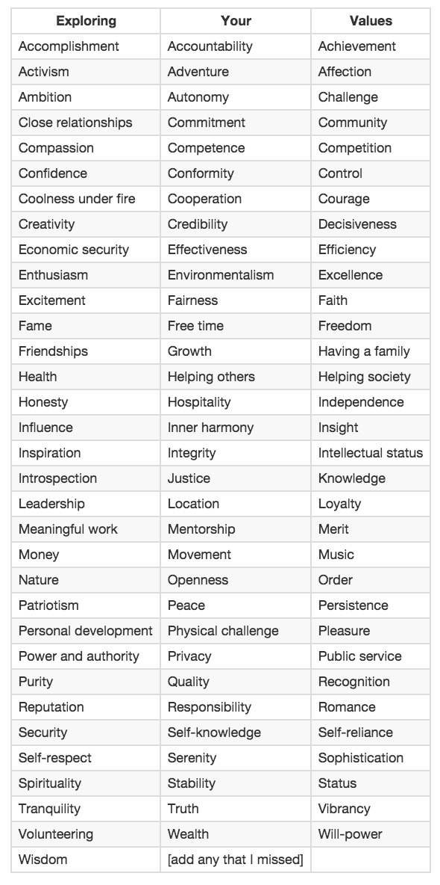

Golbs' Wernda
Values
12.14.14
This weeks cultural topic is pretty vague: 'Values'. Hmm, well yeah we all value different things. I value pizza. Other people might value not currently being engulfed in flames. What I'm going to talk about today is the values in my life I've tried to exemplify.
I was instructed to look at the following list of values and pick some that I try to live up to.

Well I didn't see pizza on there so I went with the 3 values that I most valued (so meta!) I chose Leadership, Efficiency, and Wisdom. Why those? I'm a very social person. I drift naturally into leadership roles, I'm not one for wasting time, and I've been told that I'm full of pretty decent advice.
The real test is: Have I been trying to living up to these values? On an agreement scale of 1-5 (with 5 being Yes) I'll say that:
Leadership gets a 4
Reputation gets a 5
Wisdom gets a 3
I chose Leadership as my first value due my knowledge that it is a difficult value to live up to. Being a leader means you are responsible for more than just yourself. What you do is now in a spotlight where many people will be forming opinions based on your actions or inactions. It's a lot to think about.
I have friends that often as me for advice about re-organzing, or just managing. Make things more efficient is kind of my thing. I have some friends that opened a coffee roasting company, and I like to think that without my advice in workflow management they'd be in a tough place. I'm not saying I saved the day, or that they couldn't have done it themselves; but I have a knack for organizing people and objects.
If you remember last week I wrote of Stereotype Threat. I know that there aren't many openly gay leaders in the world. Placing value in leadership and exemplifying it as much as I can can help calm threats of stereotyping myself as just a gay man with no ability to be a leader. I know that I can overcome stereotype threat by being cognizant of them, and keeping true to my values.